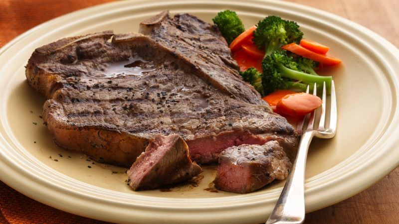

Description
Beef Steak often called just steak,
is a flat cut of beef with parallel faces,
usually cut perpendicular to the muscle fibers.
In common restaurant service a single serving
has a raw mass ranging from 120 to 600 grams (4 to 21 oz).
Beef steaks are usually grilled, pan-fried, or broiled.
The more tender cuts from the loin and rib are cooked quickly,
using dry heat, and served whole. Less tender cuts from the chuck
or round are cooked with moist heat or are mechanically tenderized
Ingredients
- 4 beef steaks, about 3/4 inch thick (porterhouse, rib eye,
sirloin or T-bone steaks) or
about 1 inch thick (tenderloin steaks)
- 1 teaspoon salt
- 3 cups cottage cheeses
- 1/4 teaspoon pepper
Steps
- Prepare the coals or a gas grill for direct heat.
Heat to medium heat,
which will take about 40 minutes for charcoal
or about 10 minutes for a gas grill.
- Cut outer edge of fat on steaks
(except tenderloin steaks)
diagonally at 1-inch intervals with a sharp knife.
Do not cut into the meat because it will allow
the juices to cook out and the beef will become dry.
- In a skillet, brown ground beef. Using a fork, mix cottage
cheese, eggs, garlic powder, parsley, salt and pepper.
In a separate bowl combine tomato paste and tomato sauce.
- Place the beef on the grill rack over medium heat.
Cover the grill; cook 6 to 8 minutes for rib eye,
10 to 12 minutes for porterhouse and T-bone or 13 to 15 minutes
for sirloin and tenderloin, turning beef once halfway through cooking,
until an instant-read meat thermometer inserted in center of thickest
part reads 145°F for medium-rare or 160°F for medium doneness.
Sprinkle with salt and pepper.